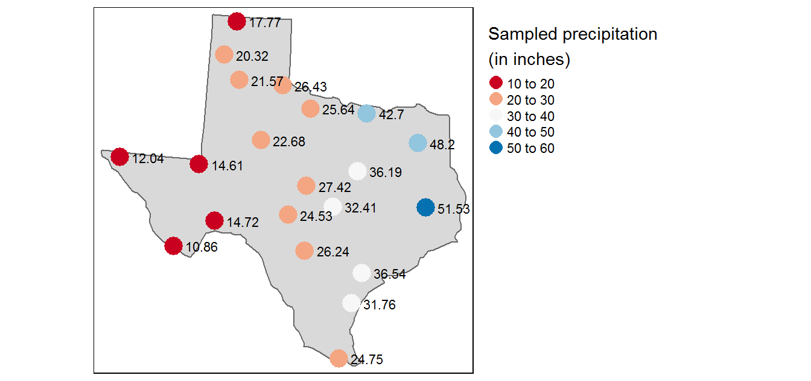
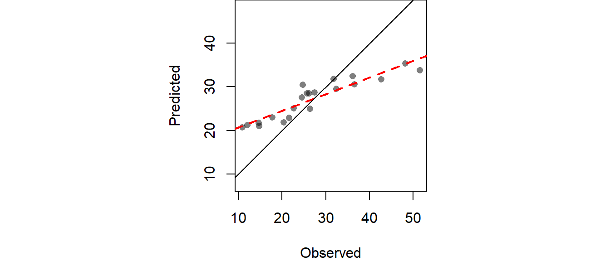

Interpolation in R
First, let’s load the data from the website. The data are stored as SpatialPointsDataFrame and SpatialPointsDataFrame objects. Most of the functions used in this exercise work off of these classes. The one exception is the direchlet function which requires a conversion to a ppp object.
library(rgdal)
library(tmap)
# Load precipitation data
z <- gzcon(url("http://colby.edu/~mgimond/Spatial/Data/precip.rds"))
P <- readRDS(z)
# Load Texas boudary map
z <- gzcon(url("http://colby.edu/~mgimond/Spatial/Data/texas.rds"))
W <- readRDS(z)
# Replace point boundary extent with that of Texas
P@bbox <- W@bbox
tm_shape(W) + tm_polygons() +
tm_shape(P) +
tm_dots(col="Precip_in", palette = "RdBu", auto.palette.mapping = FALSE,
title="Sampled precipitation \n(in inches)", size=0.7) +
tm_text("Precip_in", just="left", xmod=.5, size = 0.7) +
tm_legend(legend.outside=TRUE)
You’ll note the line P@bbox <- W@bbox which forces the rectangular extent of the Texas map onto the point data object. This is an important step if the interpolation of the points are to cover the entire extent of Texas. Had this step been omitted, most of the interpolated layers would have been limited to the smallest rectangular extent enclosing the point object.
Thiessen polygons
The Thiessen polygons (or proximity interpolation) can be created using spatstat’s dirichlet function.
library(spatstat) # Used for the dirichlet tessellation function
library(maptools) # Used for conversion from SPDF to ppp
library(raster) # Used to clip out thiessen polygons
# Create a tessellated surface
th <- as(dirichlet(as.ppp(P)), "SpatialPolygons")
# The dirichlet function does not carry over projection information
# requiring that this information be added manually
proj4string(th) <- proj4string(P)
# The tessellated surface does not store attribute information
# from the point data layer. We'll use the over() function (from the sp
# package) to join the point attributes to the tesselated surface via
# a spatial join. The over() function creates a dataframe that will need to
# be added to the `th` object thus creating a SpatialPolygonsDataFrame object
th.z <- over(th, P, fn=mean)
th.spdf <- SpatialPolygonsDataFrame(th, th.z)
# Finally, we'll clip the tessellated surface to the Texas boundaries
th.clp <- raster::intersect(W,th.spdf)
# Map the data
tm_shape(th.clp) +
tm_polygons(col="Precip_in", palette="RdBu", auto.palette.mapping=FALSE,
title="Predicted precipitation \n(in inches)") +
tm_legend(legend.outside=TRUE)
Many packages share the same function names. This can be a problem when these packages are loaded in a same R session. For example, the intersect function is available in the base, spatstat and raster packages–all of which are loaded in this current session. To ensure that the proper function is selected, it’s a good idea to preface the function name with the package name as in raster::intersect().
This tip will be used in the next chunk of code when calling the idw function which is available in both spatstat and gstat.
Note that the dirichlet function (like most functions in the spatsat package) require that the point object be in a ppp format hence the inline as.ppp(P) syntax.
IDW
The IDW output is a raster. This requires that we first create an empty raster grid, then interpolate the precipitation values to each unsampled grid cell. An IDW power value of 2 (idp=2.0) will be used.
library(gstat) # Use gstat's idw routine
library(sp) # Used for the spsample function
# Create an empty grid where n is the total number of cells
grd <- as.data.frame(spsample(P, "regular", n=50000))
names(grd) <- c("X", "Y")
coordinates(grd) <- c("X", "Y")
gridded(grd) <- TRUE # Create SpatialPixel object
fullgrid(grd) <- TRUE # Create SpatialGrid object
# Add P's projection information to the empty grid
proj4string(grd) <- proj4string(P)
# Interpolate the grid cells using a power value of 2 (idp=2.0)
P.idw <- gstat::idw(Precip_in ~ 1, P, newdata=grd, idp=2.0)
# Convert to raster object then clip to Texas
r <- raster(P.idw)
r.m <- mask(r, W)
# Plot
tm_shape(r.m) +
tm_raster(n=10,palette = "RdBu", auto.palette.mapping = FALSE,
title="Predicted precipitation \n(in inches)") +
tm_shape(P) + tm_dots(size=0.2) +
tm_legend(legend.outside=TRUE)
Fine-tuning the interpolation
The choice of power function can be subjective. To fine-tune the choice of the power parameter, you can perform a leave-one-out validation routine to measure the error in the interpolated values.
# Leave-one-out validation routine
IDW.out <- vector(length = length(P))
for (i in 1:length(P)) {
IDW.out[i] <- idw(Precip_in ~ 1, P[-i,], P[i,], idp=2.0)$var1.pred
}
# Plot the differences
OP <- par(pty="s", mar=c(4,3,0,0))
plot(IDW.out ~ P$Precip_in, asp=1, xlab="Observed", ylab="Predicted", pch=16,
col=rgb(0,0,0,0.5))
abline(lm(IDW.out ~ P$Precip_in), col="red", lw=2,lty=2)
abline(0,1)
par(OP)
The RMSE can be computed from IDW.out as follows:
# Compute RMSE
sqrt( sum((IDW.out - P$Precip_in)^2) / length(P))[1] 6.989294Cross-validation
In addition to generating an interpolated surface, you can create a 95% confidence interval map of the interpolation model. Here we’ll create a 95% CI map from an IDW interpolation that uses a power parameter of 2 (idp=2.0).
# Implementation of a jackknife technique to estimate
# a confidence interval at each unsampled point.
# Create the interpolated surface
img <- gstat::idw(Precip_in~1, P, newdata=grd, idp=2.0)
n <- length(P)
Zi <- matrix(nrow = length(img$var1.pred), ncol = n)
# Remove a point then interpolate (do this n times for each point)
st <- stack()
for (i in 1:n){
Z1 <- gstat::idw(Precip_in~1, P[-i,], newdata=grd, idp=2.0)
st <- addLayer(st,raster(Z1,layer=1))
# Calculated pseudo-value Z at j
Zi[,i] <- n * img$var1.pred - (n-1) * Z1$var1.pred
}
# Jackknife estimator of parameter Z at location j
Zj <- as.matrix(apply(Zi, 1, sum, na.rm=T) / n )
# Compute (Zi* - Zj)^2
c1 <- apply(Zi,2,'-',Zj) # Compute the difference
c1 <- apply(c1^2, 1, sum, na.rm=T ) # Sum the square of the difference
# Compute the confidence interval
CI <- sqrt( 1/(n*(n-1)) * c1)
# Create (CI / interpolated value) raster
img.sig <- img
img.sig$v <- CI /img$var1.pred
# Clip the confidence raster to Texas
r <- raster(img.sig, layer="v")
r.m <- mask(r, W)
# Plot the map
tm_shape(r.m) + tm_raster(n=7,title="95% confidence interval \n(in inches)") +
tm_shape(P) + tm_dots(size=0.2) +
tm_legend(legend.outside=TRUE)
1st order polynomial fit
To fit a first order polynomial model of the form \(precip = intercept + aX + bY\) to the data,
# Define the 1st order polynomial equation
f.1 <- as.formula(Precip_in ~ X + Y)
# Add X and Y to P
P$X <- coordinates(P)[,1]
P$Y <- coordinates(P)[,2]
# Run the regression model
lm.1 <- lm( f.1, data=P)
# Use the regression model output to interpolate the surface
dat.1st <- SpatialGridDataFrame(grd, data.frame(var1.pred = predict(lm.1, newdata=grd)))
# Clip the interpolated raster to Texas
r <- raster(dat.1st)
r.m <- mask(r, W)
# Plot the map
tm_shape(r.m) +
tm_raster(n=10, palette="RdBu", auto.palette.mapping=FALSE,
title="Predicted precipitation \n(in inches)") +
tm_shape(P) + tm_dots(size=0.2) +
tm_legend(legend.outside=TRUE)
2nd order polynomial
To fit a second order polynomial model of the form \(precip = intercept + aX + bY + dX^2 + eY^2 +fXY\) to the data,
# Define the 2nd order polynomial equation
f.2 <- as.formula(Precip_in ~ X + Y + I(X*X)+I(Y*Y) + I(X*Y))
# Add X and Y to P
P$X <- coordinates(P)[,1]
P$Y <- coordinates(P)[,2]
# Run the regression model
lm.2 <- lm( f.2, data=P)
# Use the regression model output to interpolate the surface
dat.2nd <- SpatialGridDataFrame(grd, data.frame(var1.pred = predict(lm.2, newdata=grd)))
# Clip the interpolated raster to Texas
r <- raster(dat.2nd)
r.m <- mask(r, W)
# Plot the map
tm_shape(r.m) +
tm_raster(n=10, palette="RdBu", auto.palette.mapping=FALSE,
title="Predicted precipitation \n(in inches)") +
tm_shape(P) + tm_dots(size=0.2) +
tm_legend(legend.outside=TRUE)
Kriging
Fit the variogram model
First, we need to create a variogram model. Note that the variogram model is computed on the de-trended data. This is implemented in the following chunk of code by passing the 1st order trend model (defined in an earlier code chunk as formula object f.1) to the variogram function.
# Define the 1st order polynomial equation
f.1 <- as.formula(Precip_in ~ X + Y)
# Compute the sample variogram; note that the f.1 trend model is one of the
# parameters passed to variogram(). This tells the function to create the
# variogram on the de-trended data.
var.smpl <- variogram(f.1, P, cloud = FALSE, cutoff=1000000, width=89900)
# Compute the variogram model by passing the nugget, sill and range values
# to fit.variogram() via the vgm() function.
dat.fit <- fit.variogram(var.smpl, fit.ranges = FALSE, fit.sills = FALSE,
vgm(psill=14, model="Sph", range=590000, nugget=0))
# The following plot allows us to assess the fit
plot(var.smpl, dat.fit, xlim=c(0,1000000))
Generate Kriged surface
Next, use the variogram model dat.fit to generate a kriged interpolated surface. The krige function allows us to include the trend model thus saving us from having to de-trend the data, krige the residuals, then combine the two rasters. Instead, all we need to do is pass krige the trend formula f.1.
# Define the trend model
f.1 <- as.formula(Precip_in ~ X + Y)
# Perform the krige interpolation (note the use of the variogram model
# created in the earlier step)
dat.krg <- krige( f.1, P, grd, dat.fit)
# Convert kriged surface to a raster object for clipping
r <- raster(dat.krg)
r.m <- mask(r, W)
# Plot the map
tm_shape(r.m) +
tm_raster(n=10, palette="RdBu", auto.palette.mapping=FALSE,
title="Predicted precipitation \n(in inches)") +
tm_shape(P) + tm_dots(size=0.2) +
tm_legend(legend.outside=TRUE)
Generate the variance map
The dat.krg object stores not just the interpolated values, but the variance values as well. These can be passed to the raster object for mapping as follows:
r <- raster(dat.krg, layer="var1.var")
r.m <- mask(r, W)
tm_shape(r.m) +
tm_raster(n=7, palette ="Reds",
title="Variance map \n(in inches)") +tm_shape(P) + tm_dots(size=0.2) +
tm_legend(legend.outside=TRUE)